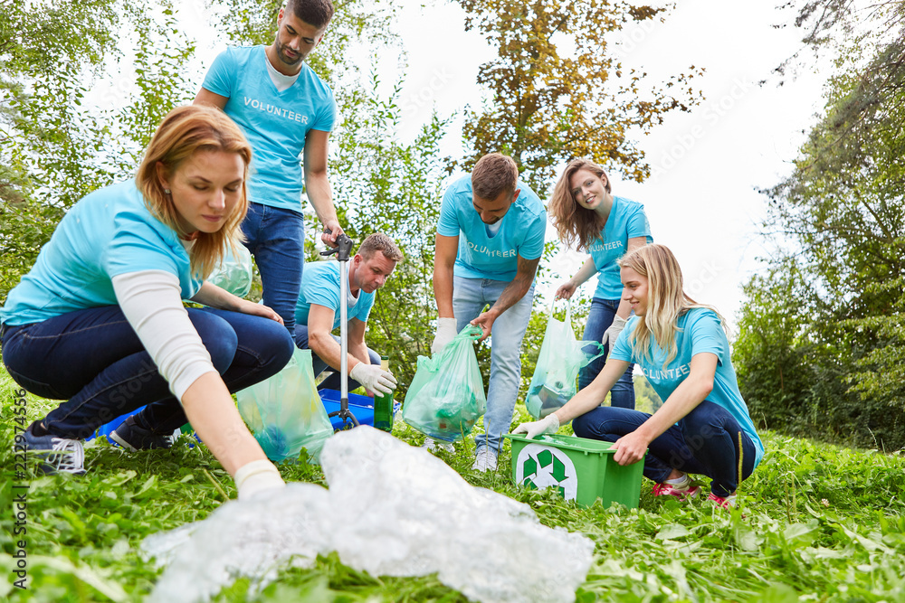
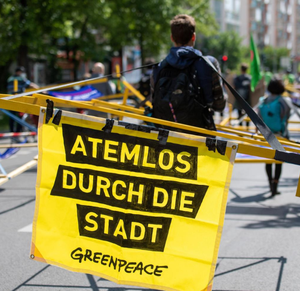
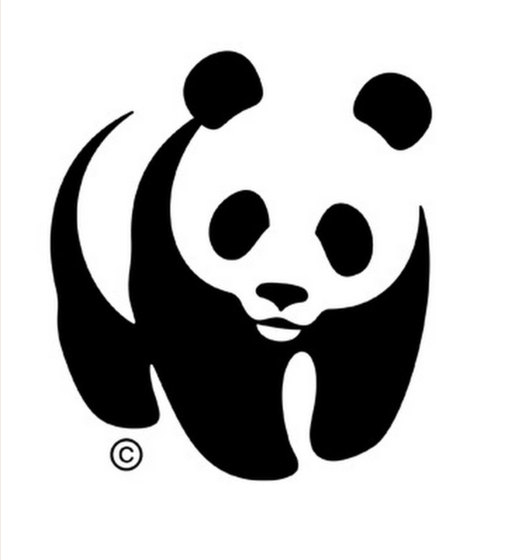
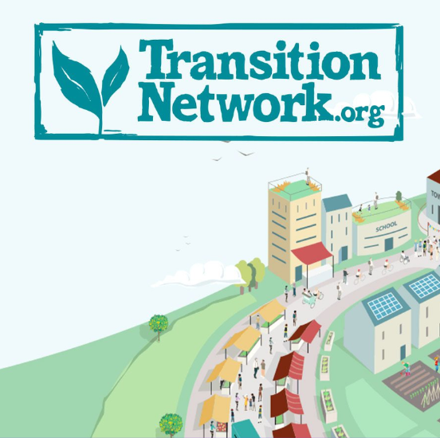
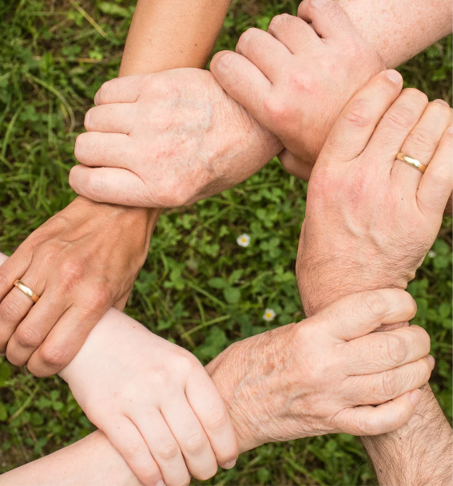

Organisationen für Nachhaltigkeit und Umweltschutz: Wer kämpft für unsere Zukunft?
Hey, ihr Weltverbesserer! Die Zukunft unseres Planeten steht auf dem Spiel, und zum Glück gibt es jede Menge Organisationen, die sich für Nachhaltigkeit und Umweltschutz einsetzen. Wir stellen euch die wichtigsten Player vor – lasst euch inspirieren und werdet aktiv!
Greenpeace: Die Aktivisten, die für die Umwelt kämpfen!
Greenpeace ist bekannt für spektakuläre Aktionen und mutige Proteste. Ob sie sich an Ölplattformen ketten oder gegen Atomkraftwerke demonstrieren – Greenpeace setzt sich kompromisslos für den Schutz unserer Umwelt ein. Sie kämpfen gegen die Zerstörung der Meere, die Abholzung der Regenwälder und den Klimawandel. Respekt!
WWF: Die Naturschützer, die die Artenvielfalt retten wollen!
Der WWF setzt sich für den Schutz bedrohter Tierarten und ihrer Lebensräume ein. Sie kämpfen gegen Wilderei, illegalen Handel und die Zerstörung von Wäldern und Meeren. Sie engagieren sich auch für nachhaltige Landwirtschaft und den Schutz des Klimas. Der WWF zeigt, dass Naturschutz wichtig ist – für die Tiere und für uns Menschen!
Transition Network: Die Bewegung, die die Welt von unten verändern will!
Das Transition Network ist eine Graswurzelbewegung, die sich für eine nachhaltige Zukunft einsetzt. Sie fördern lokale Initiativen, die sich für erneuerbare Energien, nachhaltige Landwirtschaft und eine solidarische Wirtschaft engagieren. Sie zeigen, dass jeder etwas tun kann, um die Welt zu einem besseren Ort zu machen!
CERES: Die Investoren, die die Wirtschaft grün machen wollen!
CERES ist ein Netzwerk von Investoren und Unternehmen, die sich für eine nachhaltige Wirtschaft einsetzen. Sie fördern Unternehmen, die soziale und ökologische Verantwortung übernehmen, und setzen sich für eine grüne Finanzwelt ein. Sie zeigen, dass Nachhaltigkeit und Wirtschaftlichkeit Hand in Hand gehen können!
Das sind nur einige der vielen Organisationen, die sich für unsere Zukunft einsetzen. Informiere dich, unterstütze sie und werde aktiv! Gemeinsam können wir die Welt verändern!